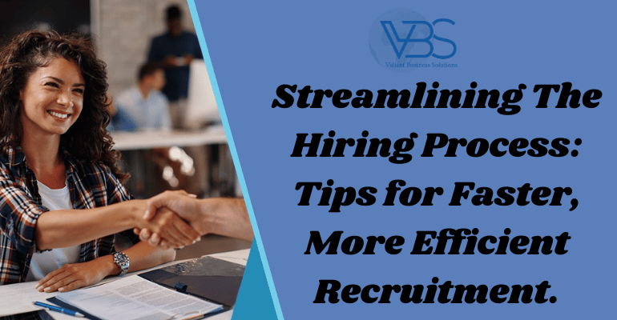

Streamlining The Hiring Process: Tips for Faster, More Efficient Recruitment.
- Home
- Streamlining The Hiring Process: Tips for Faster, More Efficient Recruitment.

28 July
Welcome to the
Valiant Business Solutions
(VBS) blog! As a leadingHR recruitment firm in Pune
, we understand the challenges businesses face when searching for the perfect candidate. In today's fast-paced world, time is of the essence, and that's why we are here to help you streamline your hiring process. In this blog post, we'll share valuable insights and tips to ensure your recruitment efforts are faster and more efficient, leveraging ourjob placement
andjob consultancy services
along the way.Embrace Technology and Automation
Incorporating technology into your hiring process can significantly speed up recruitment while maintaining accuracy. At
VBS
, we utilize cutting-edge Applicant Tracking Systems (ATS) to manage candidate databases, track applications, and facilitate communication with applicants. This allows us to identify suitable candidates quickly and reduce the time spent on administrative tasks.Develop a Clear Job Description
A well-crafted job description is the foundation of a successful hiring process. Clearly outline the required skills, qualifications, and responsibilities to attract relevant candidates efficiently. As VBS, we work closely with our clients to create compelling job descriptions that resonate with the desired talent pool.
Leverage Social Media and Online Platforms
In this digital age, social media is a powerful tool for reaching a vast audience of potential candidates. VBS utilizes our extensive network and social media platforms to promote job openings and engage with potential applicants. This not only increases visibility but also speeds up the process of sourcing suitable candidates.
Focus on Candidate Engagement
Keeping candidates engaged throughout the recruitment process is essential. VBS ensures regular communication with applicants, providing timely updates and feedback. Our personalized approach helps build a positive candidate experience, which, in turn, boosts the chances of securing top talent quickly.
Implement Behavioral Interviews
Behavioral interviews offer deeper insights into a candidate's past experiences and behaviors, aiding in making informed hiring decisions. Our HR experts at VBS conduct behavioral interviews to assess a candidate's compatibility with the company culture and job requirements efficiently.
Tap into Passive Talent
The best-fit candidates may not always actively seek job opportunities. As an experienced HR recruitment firm, VBS knows how to access passive talent pools. We engage with potential candidates who may not be actively looking for new roles, increasing the chances of discovering exceptional talent.
Conduct Pre-Screening and Skills Testing
Before conducting face-to-face interviews, conduct pre-screening and skills testing to shortlist the most suitable candidates. VBS employs tailored assessments and screening techniques to ensure that only the most qualified candidates progress to the next stage of the recruitment process.
At Valiant Business Solutions, we pride ourselves on delivering top-notch job consultancy services to businesses in Pune. By embracing technology, optimizing candidate engagement, and tapping into passive talent pools, we ensure a faster and more efficient hiring process for our clients. Let us handle your recruitment needs, allowing you to focus on what you do best - growing your business. Get in touch with us today to experience a seamless and time-effective hiring process for your company.